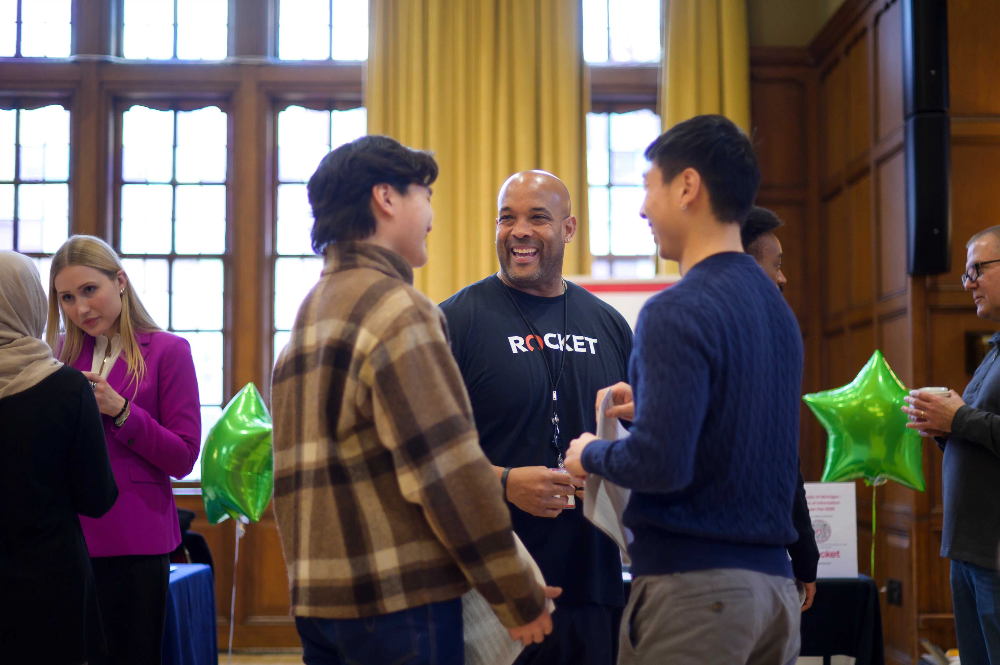

Why Networking Matters

-->Networking is one of the most effective ways to discover career opportunities, gain industry insights, and build meaningful professional relationships. Many positions are filled through connections before they are ever posted publicly.
As a UMSI student, you have access to a strong alumni network and a supportive career community. These resources will help you build confidence and develop strategies for making connections that last.
Getting Started with Networking
- Identify Your Goals: Think about what industries, roles, or companies interest you. This helps you target the right people to connect with.
- Craft Your Introduction: Prepare a brief, natural summary of who you are, what you study, and what you are looking for.
- Reach Out: Send thoughtful emails or LinkedIn messages to alumni, professionals, or peers. Use the outreach examples below as a starting point.
- Conduct Informational Interviews: Ask for 20 to 30 minutes of someone's time to learn about their career path and gather advice.
- Follow Up and Stay Connected: Send a thank-you note after every conversation and keep in touch over time.
Networking Resources
A guide to understanding why networking matters and how to start building your professional circle.
Templates and sample emails to help you reach out confidently to alumni and professionals.
Learn a structured approach to asking great questions during informational interviews.
Find upcoming CDO events including career fairs, panels, and networking sessions.
Networking FAQ
-
What if I feel uncomfortable reaching out to strangers?
It is completely normal. Start with UMSI alumni who are often eager to help fellow students. Keep your message short and genuine. -
How do I find people to network with?
LinkedIn is a great starting point. Search for UMSI alumni in roles or companies you are interested in. The CDO can also help you identify contacts. -
What is an informational interview?
It is a short conversation (usually 20 to 30 minutes) where you ask a professional about their career path, industry, and advice. It is not a job interview. -
Should I network even if I am not job searching right now?
Yes. Building relationships early gives you a stronger network when opportunities arise later.
Need Networking Help?
Book an appointment with a CDO Career Coach to practice your introduction, review outreach messages, or plan your networking strategy.